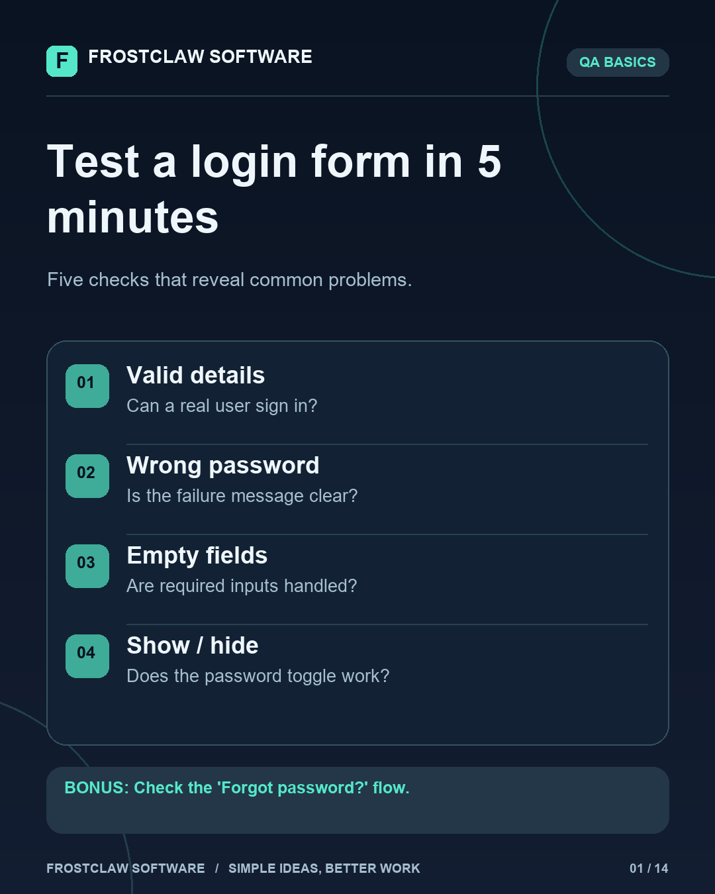

Test a login form in 5 minutes
A login form looks simple—until you test more than the happy path. Start with valid credentials, an incorrect password, empty fields and password visibility. Then check recovery and how errors are displayed. Which login bug have you encountered most often?